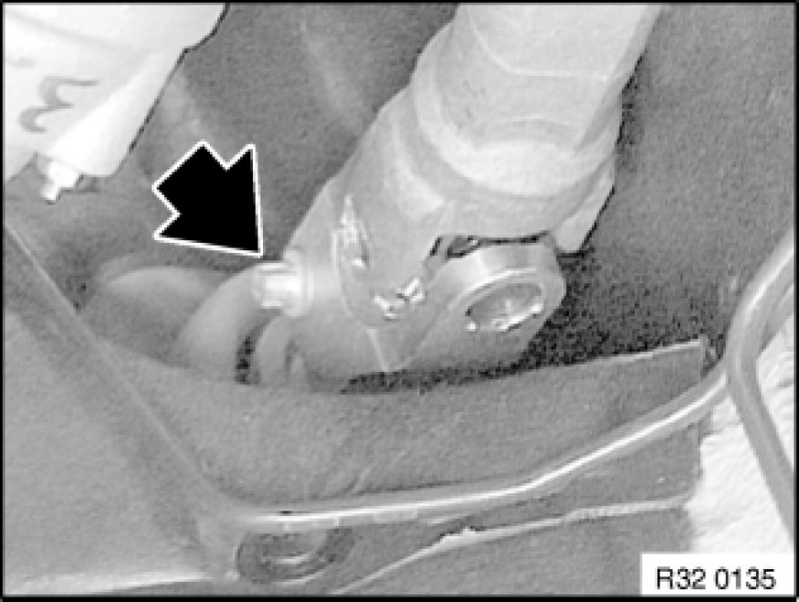
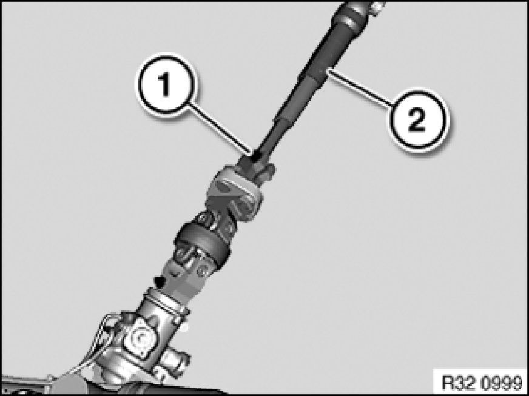

Removing and Installing/Replacing Lower Section of Steering Spindle
32 31 070 - Removing and installing / replacing lower section of steering spindle

Important!
If the lower section of the steering spindle is separated from the double joint/steering column, the steering column switch cluster may be damaged when the steering wheel is turned.

Release clamping screw.
Move steering wheel to straight-ahead position and remove ignition key.
Detach lower steering spindle from steering column and remove with double joint towards bottom.
Installation Note:
Clean thread to remove all remnants of screw securing adhesive.
Replace clamping screw.
Clamping screw must rest in groove of steering column.
Tightening torque 32 31 1AZ [1][2]Specifications.

Release clamping screw (1).
Pull steering spindle lower section (2) from double joint.
Installation Note:
Clean thread to remove all remnants of screw securing adhesive.
Replace clamping screw.
Clamping screw must rest in groove of steering spindle lower section.
Tightening torque 32 31 1AZ [1][2]Specifications.

After installation:
- Turn steering wheel in both directions to full lock. The airbag warning lamp must not light up in the process.
- Carry out steering angle sensor adjustment Adjustments
- Check directional stability of car